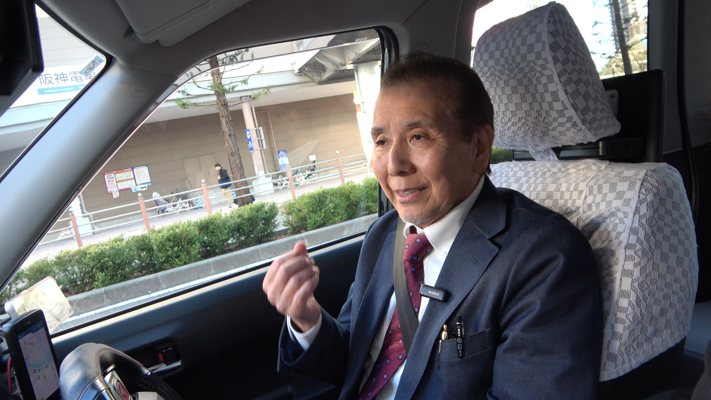

つーさんはYouTubeで「大阪タクドラ本舗」を発信されていますよね。なぜタクシー会社で情報発信をしようと思ったんですか？
もともと「タクシーの仕事ってこんなに面白いんだよ！」って伝えたくて始めたんですが、ありがたいことにワンコインドームには同じように発信している仲間がたくさんいるんです。
ここは単なる職場じゃなくて、『タクシーの魅力を伝える発信局』みたいな存在になっていますね。

「タクシー乗務の魅力を伝える発信局」について、答えてくれたタクシー乗務員さん
つーさん 乗務歴4年目 昼勤
もともと「タクシーの仕事ってこんなに面白いんだよ！」って伝えたくて始めたんですが、ありがたいことにワンコインドームには同じように発信している仲間がたくさんいるんです。
ここは単なる職場じゃなくて、『タクシーの魅力を伝える発信局』みたいな存在になっていますね。
私をこの業界に導いてくださった、大阪昼勤タクドラキッタン動画のキッタンさん。
現役タクシードライバーとしては、Youtuberのパイオニア的存在です。
「タクシーは自由で気楽で高収入」な仕事であることを、発信されていて、私もこのキッタン動画を視聴して、チャレンジしようと決めました。
「大阪タクドラ放送局」のとんくんもYouTubeで発信しています。
彼は奈良から通いながら、小さな娘さんの子育てを両立しているパパドライバーです。
等身大の生活とタクシーライフを発信していて、同世代のドライバーにとても共感されてます。
そうなんです。例えば夜勤のトップドライバーである「TANKI」さんのブログ。
『大阪の街を走るタクシードライバー6年生のTANKIのブログ』は夜勤ドライバーには売上のヒントとなる営業記録が満載で、同業者からも人気です。
もちろん。「つかぴー」さんのブログ『タクシーつかぴの「今月も楽勝給料40万!」3rdシーズン』も有名です。
今は内勤で働いていますが、元ドライバーの視点も含めて真実のタクシー情報を発信してくれています。
まさにそうです。現役ドライバーも内勤者も、自分の言葉で発信しているから、会社の風通しがすごく良いんです。
隠しごともなく、業界の真実やリアルを共有できる環境があるから、安心して働ける。
これこそワンコインドームの強みだと思いますね。
ワンコインドームには、タクシーの魅力を世の中に伝える文化があります。
YouTube でも、ブログでも、 SNS でも。発信することで、タクシーの楽しさをより深く味わえるし、仲間とのつながりも強くなります。
そんな仲間を、私たちワンコインドームは待っています。